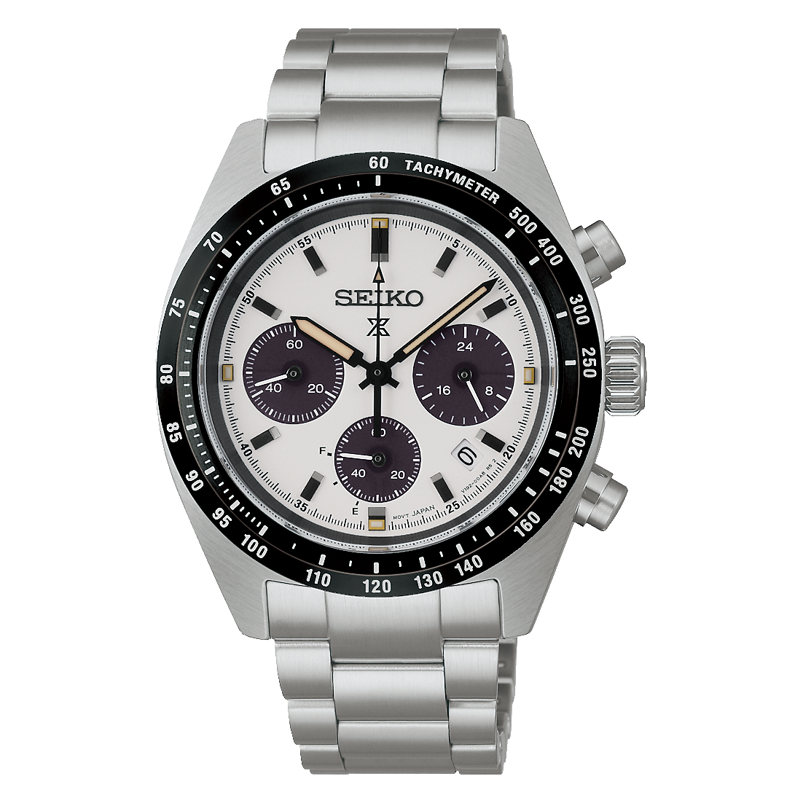
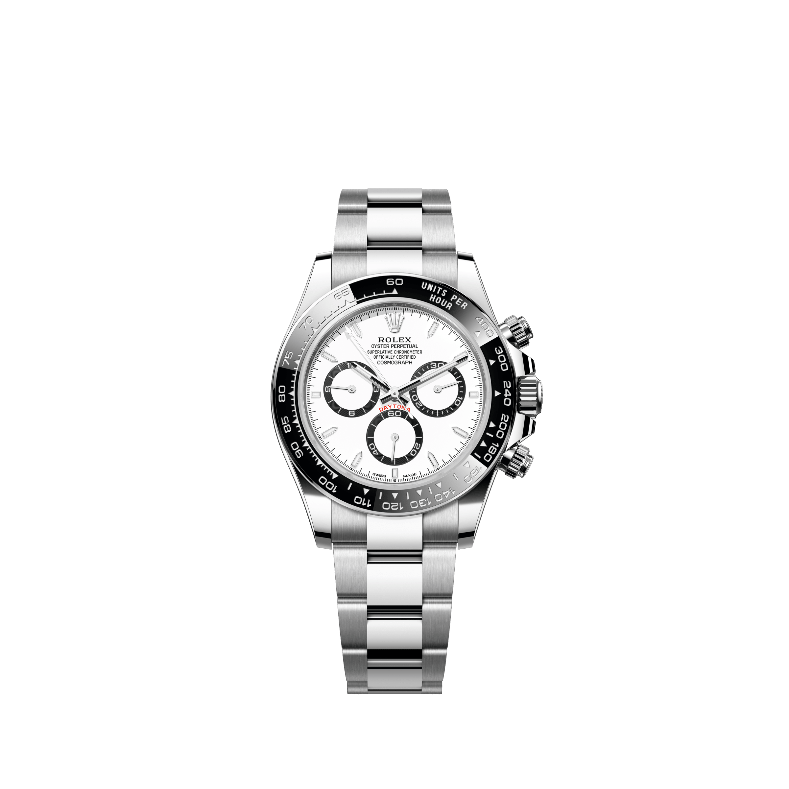

pt1
Se tirássemos o nome do mostrador,qual você escolheria?


A
B
Deslize e descubra quem é quem.


| Seiko | Rolex | |
|---|---|---|
| Preço | US$ 750 | US$ 16.900 |
| Movimento | Solar | Mecânico |
| Autonomia | ~6 meses | ~72 horas |
| Precisão | ~±0,5 s por dia | ±2 s por dia |
| Data | Sim | Não |
| Cronógrafo mede | Até 60 minutos | Até 12 horas |
| Diâmetro | 39 mm | 40 mm |
| Seiko | Rolex | |
|---|---|---|
| Price | $750 | $16,900 |
| Movement | Solar | Mechanical |
| Run time | ~6 months | ~72 hours |
| Accuracy | ~±0.5 sec a day | ±2 sec a day |
| Date | Yes | No |
| Chronograph measures | Up to 60 minutes | Up to 12 hours |
| Diameter | 39 mm | 40 mm |